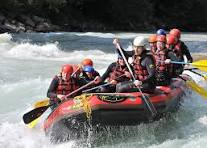
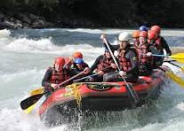
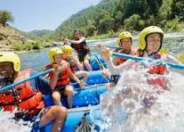
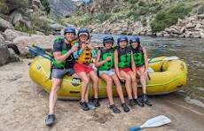
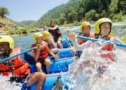
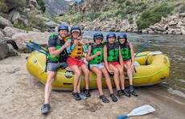

History
Pasima rafting company provides guided adventures on rivers, leading clients in inflatable rafts
rapids and scenic waterways.Our company offer a mix of adrenaline-pumping excitement and a chance
through thrilling whitewater to appreciate natural beauty,requiring teamwork and communication.
These companies offer a mix of adrenaline-pumping excitement and a chance to appreciate a
natures beauty, requiring teamwork and communication to navigate the river.We have professional guides
who
are
trained in safety and rescue techniques, ensuring a secure and enjoyable experience for all.
[Founded in 2005 by Nigerian adventurer Paschal Ezenwa,Rafting rapid Adventure began with humble trips
on the Ogun
River.
Inspired by local fishermen's skills,Paschal pioneered eco-friendly rafting. Early expeditions focused
on
Cross River's rapids, blending thrill with cultural immersion. By 2010, they expanded to Benue River,
emphasizing
conservation. Today,Rapids Adventures is a leading rafting outfitter, known for expert guides, safety,
and showcasing Nigeria's waterway beauty. Partnerships with local communities boost eco-tourism, making
adventure
accessible while preserving aquatic's heritage.].

 

 


